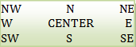

Le langage python
3 et l'Interface Graphique Tkinter
|
| Le widget Label |
Voir cet exemple
| activebackground |
Couleur
d'arrière plan quand la souris survole le widget |
| activeforeground |
Couleur
du texte du widget quand la souris survole le
widget |
| anchor |
alignement
du texte dans le widget. par
défaut=CENTER  |
| background
(bg) |
Couleur
du widget "red", "blue", "green", "yellow", . . . ou
#rrvvbb |
| borderwidth
(bd) |
Épaisseurde
la bordure en pixels. Défaut=2. améliore l'effet de relief |
| bitmap |
bitmap
à afficher dans le widget |
| compound |
Si on
désire afficher un texte et une image dans le widget. Cette
option permet de préciser la position de l'image par rapport au
texte. Les valeurs possibles sont: LEFT, RIGHT, CENTER, BOTTOM,
TOP. |
| cursor |
Curseur
de la souris quand celle-ci survole le widget |
| disabledbackground |
Couleur
quand le widget est désactivé |
| foreground
(fg) |
Couleur
du texte |
| font |
Fonte
du texte du bouton. exemple: font="arial 8 italic
bold" |
| height |
Hauteur
du widget en ligne |
| image |
Image
à afficher sur le label (à la place du texte). Préférer les
images .gif |
| justify |
Permet
de justifier le texte (LEFT, CENTER, RIGHT) dans le cas où
celui-ci contient des \n pour retourner à la ligne |
| padx |
Marge
horizontale du texte par rapport aux limites du widget padx=3 => 3 pixels, padx='3m' => 3 mm, padx='1c' => 1 cm, padx='0.5i' => 0.5 inch |
| pady |
Marges
verticales |
| relief |
Relief
du bouton. Défaut = RAISED |
| state |
Permet
d'activer (NORMAL) ou de désactiver (DISABLED) un bouton je n'ai pas bien compris le rôle de la valeur ACTIVE |
| text |
Texte
à afficher dans le widget |
| textvariable |
Pour
lier le texte du widget à une variable de la classe StringVar |
| width |
Largeur
du widget en caractère |
| |
|